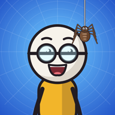
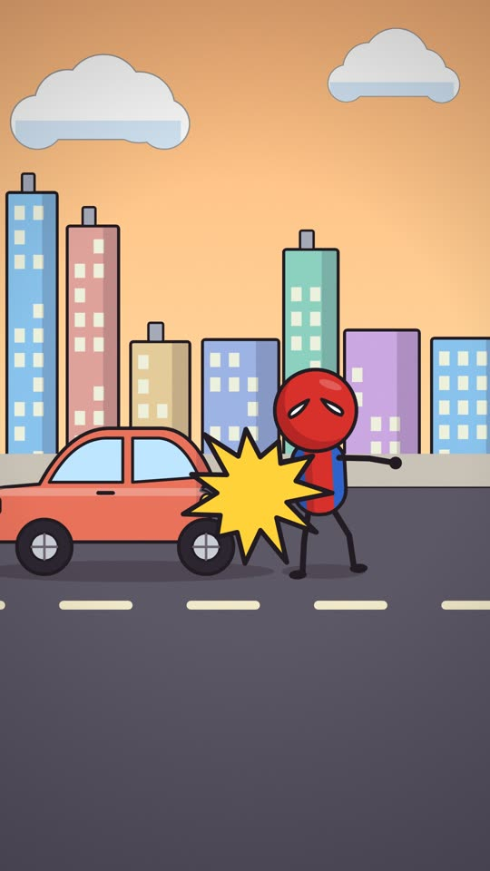
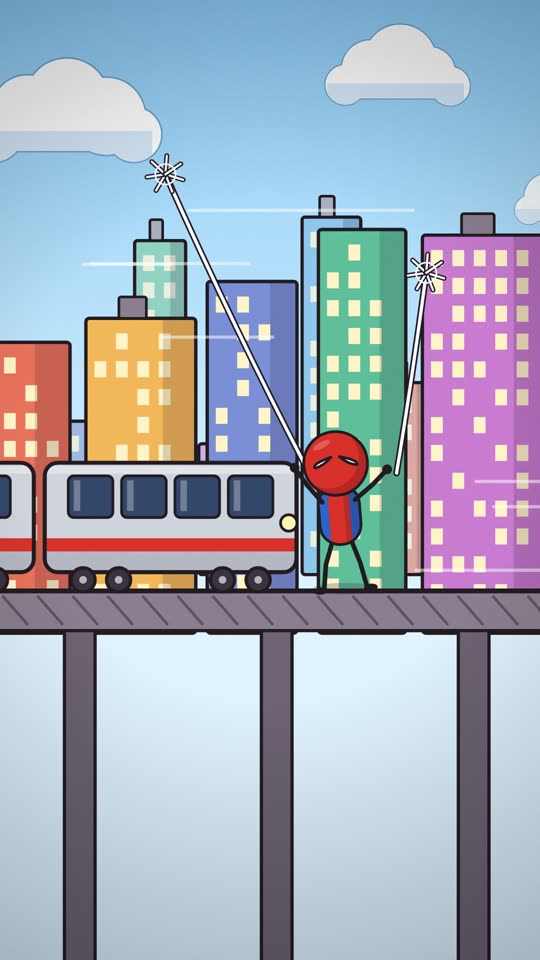
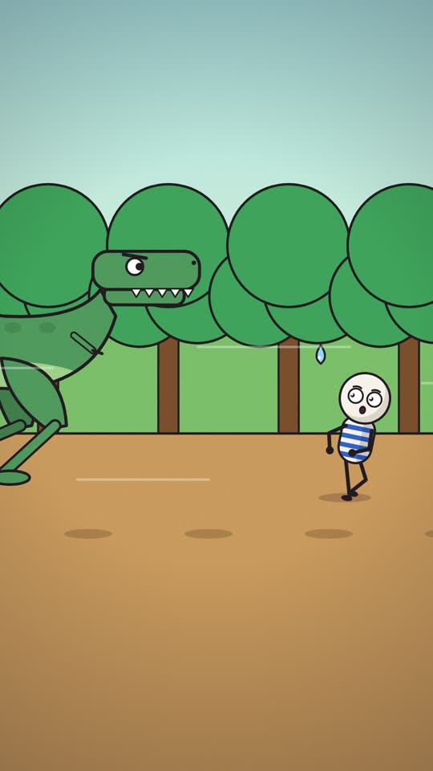

<title>Stick Science Lab</title>
<meta name="claude:viewport-fit-sides" content="cover">
<meta name="description" content="Real science, explained by stick figures. Movie scenes, superpowers and wild what-ifs, checked against the actual math in under a minute.">
<link rel="preconnect" href="https://fonts.googleapis.com">
<link rel="preconnect" href="https://fonts.gstatic.com" crossorigin>
<link rel="stylesheet" href="https://fonts.googleapis.com/css2?family=Poppins:wght@600;700;800&family=Inter:wght@400;500;600&display=swap">
<style>
/* Layout: a lab-notebook page. Grid-paper hero with three Shorts propped like index cards,
   then one "case file" per Short (question, verdict, the number that decides it, sources),
   a three-step method strip, and a subscribe band. Brand tokens come from the reels and icon. */
:root {
  --paper: #f7f4ee;      /* page */
  --sheet: #ffffff;      /* cards */
  --ink: #221c22;        /* text, outlines */
  --ink-soft: #5f5862;   /* secondary text */
  --grid: rgba(36, 87, 201, .10); /* notebook grid lines */
  --sky: #cfeaff;        /* hero ground */
  --blue: #2457c9;       /* links, method marks */
  --red: #c42b22;        /* the one accent word, CTA */
  --on-red: #ffffff;
  --marker: #ffe14d;     /* highlighter behind key words */
  --rule: rgba(34, 28, 34, .14);
  --shadow: 0 2px 0 rgba(34, 28, 34, .08), 0 14px 30px rgba(34, 28, 34, .10);
  --display: "Poppins", "Avenir Next", "Helvetica Neue", Arial, sans-serif;
  --body: "Inter", "Helvetica Neue", Arial, sans-serif;
  --step--1: .875rem; --step-0: 1rem; --step-1: 1.25rem; --step-2: 1.6rem; --step-3: 2.2rem; --step-4: clamp(2.4rem, 6vw, 4rem);
}
@media (prefers-color-scheme: dark) {
  :root:not([data-theme="light"]) {
    --paper: #15131a; --sheet: #1f1c26; --ink: #f3eff7; --ink-soft: #b4adbd; --grid: rgba(108, 198, 255, .09);
    --sky: #17243a; --blue: #7ab8ff; --red: #ff6a5c; --on-red: #1a0d0b; --marker: #8a7212; --rule: rgba(243, 239, 247, .14);
    --shadow: 0 2px 0 rgba(0, 0, 0, .3), 0 14px 30px rgba(0, 0, 0, .35); color-scheme: dark;
  }
}
:root[data-theme="dark"] {
  --paper: #15131a; --sheet: #1f1c26; --ink: #f3eff7; --ink-soft: #b4adbd; --grid: rgba(108, 198, 255, .09);
  --sky: #17243a; --blue: #7ab8ff; --red: #ff6a5c; --on-red: #1a0d0b; --marker: #8a7212; --rule: rgba(243, 239, 247, .14);
  --shadow: 0 2px 0 rgba(0, 0, 0, .3), 0 14px 30px rgba(0, 0, 0, .35); color-scheme: dark;
}

* { box-sizing: border-box; }
body { background: var(--paper); color: var(--ink); font: 400 var(--step-0)/1.6 var(--body); -webkit-font-smoothing: antialiased; }
a { color: var(--blue); text-underline-offset: 3px; }
:focus-visible { outline: 3px solid var(--blue); outline-offset: 3px; border-radius: 6px; }
h1, h2, h3 { font-family: var(--display); line-height: 1.1; text-wrap: balance; margin: 0; }
.wrap { max-width: 1120px; margin-inline: auto; padding-left: max(16px, env(safe-area-inset-left, 0px)); padding-right: max(16px, env(safe-area-inset-right, 0px)); }
.mark { background: linear-gradient(transparent 12%, var(--marker) 12%, var(--marker) 92%, transparent 92%); padding-inline: .12em; box-decoration-break: clone; -webkit-box-decoration-break: clone; }
.eyebrow { text-wrap: balance; font: 600 var(--step--1)/1.4 var(--body); letter-spacing: .12em; text-transform: uppercase; color: var(--ink-soft); }

/* header */
body::before { content: ""; position: fixed; inset: 0 0 auto; height: env(safe-area-inset-top, 0px); z-index: 10; background: var(--paper); }
.top { position: sticky; top: env(safe-area-inset-top, 0px); z-index: 5; background: color-mix(in srgb, var(--paper) 92%, transparent); backdrop-filter: blur(8px); border-bottom: 1px solid var(--rule); }
.top .wrap { display: flex; align-items: center; gap: 16px; min-height: 64px; }
.brand { display: flex; align-items: center; gap: 10px; color: var(--ink); text-decoration: none; font: 700 1.05rem/1 var(--display); }
.brand img { width: 36px; height: 36px; border-radius: 50%; }
.top nav { display: flex; gap: 6px; margin-left: auto; }
.top nav a { color: var(--ink); text-decoration: none; font-weight: 500; padding: 10px 12px; border-radius: 10px; }
.top nav a:hover { background: var(--grid); }
.btn { display: inline-flex; align-items: center; justify-content: center; gap: 8px; min-height: 44px; padding: 0 20px; border-radius: 999px; font: 700 var(--step-0)/1 var(--display); text-decoration: none; cursor: pointer; transition: transform .2s ease, box-shadow .2s ease; }
.btn-red { background: var(--red); color: var(--on-red); box-shadow: 0 3px 0 color-mix(in srgb, var(--red) 55%, #000); }
.btn-red:hover { transform: translateY(-2px); }
.btn-line { color: var(--ink); border: 2px solid var(--ink); }
.btn-line:hover { background: var(--grid); }
@media (max-width: 720px) { .top nav { display: none; } .top .btn { margin-left: auto; } }

/* hero: grid paper + three Shorts propped like index cards */
.hero { overflow: clip; background-color: var(--sky); background-image: linear-gradient(var(--grid) 1px, transparent 1px), linear-gradient(90deg, var(--grid) 1px, transparent 1px); background-size: 28px 28px; border-bottom: 1px solid var(--rule); }
.hero .wrap { display: grid; grid-template-columns: 1.05fr 1fr; gap: 40px; align-items: center; padding-block: 64px 72px; }
.hero h1 { font-size: var(--step-4); font-weight: 800; letter-spacing: -.02em; }
.hero p { font-size: var(--step-1); color: var(--ink-soft); max-width: 34ch; margin: 20px 0 28px; }
.hero .ctas { display: flex; flex-wrap: wrap; gap: 12px; }
.stack { position: relative; height: 420px; }
.stack figure { position: absolute; margin: 0; width: 44%; aspect-ratio: 9 / 16; max-width: 100%; border-radius: 18px; overflow: hidden; border: 3px solid var(--ink); background: var(--sheet); box-shadow: var(--shadow); }
.stack img { width: 100%; height: 100%; object-fit: cover; display: block; }
.stack figure:nth-child(1) { left: 0; top: 40px; transform: rotate(-7deg); }
.stack figure:nth-child(2) { left: 28%; top: 0; transform: rotate(2deg); z-index: 2; }
.stack figure:nth-child(3) { right: 0; top: 52px; transform: rotate(8deg); }
@media (max-width: 860px) { .hero .wrap { grid-template-columns: 1fr; padding-block: 40px 48px; } .stack { height: 300px; max-width: 420px; } }

/* shorts: one case file per Short */
section { padding-block: 72px; }
.head { display: flex; flex-wrap: wrap; align-items: end; justify-content: space-between; gap: 16px; margin-bottom: 32px; }
.head h2 { font-size: var(--step-3); }
.head p { margin: 0; color: var(--ink-soft); max-width: 46ch; }
.cases { display: grid; grid-template-columns: repeat(3, minmax(0, 1fr)); gap: 24px; }
.case { display: flex; flex-direction: column; background: var(--sheet); border: 1px solid var(--rule); border-radius: 20px; overflow: hidden; box-shadow: var(--shadow); min-width: 0; }
.case video { width: 100%; aspect-ratio: 9 / 16; max-height: 520px; object-fit: cover; background: #000; display: block; }
.case .body { display: flex; flex-direction: column; gap: 12px; padding: 20px 20px 22px; flex: 1; }
.case h3 { font-size: var(--step-1); }
.meta { display: flex; flex-wrap: wrap; gap: 8px; }
.chip { display: inline-flex; align-items: center; gap: 6px; padding: 4px 10px; border-radius: 999px; font: 600 var(--step--1)/1.4 var(--body); border: 1px solid var(--rule); white-space: nowrap; }
.chip.verdict { background: var(--marker); color: var(--ink); border-color: transparent; }
.figure { display: flex; flex-wrap: wrap; align-items: baseline; gap: 4px 10px; padding-top: 12px; border-top: 1px dashed var(--rule); margin-top: auto; }
.figure b { white-space: nowrap; font: 800 var(--step-2)/1 var(--display); font-variant-numeric: tabular-nums; letter-spacing: -.01em; }
.figure span { color: var(--ink-soft); font-size: var(--step--1); }
.sources { font-size: var(--step--1); color: var(--ink-soft); }
@media (max-width: 960px) { .cases { grid-template-columns: repeat(2, minmax(0, 1fr)); } }
@media (max-width: 620px) { .cases { grid-template-columns: 1fr; } .case video { max-height: none; } }

/* method: a real three-step process, so numbers are meaningful */
.method { background: var(--sheet); border-block: 1px solid var(--rule); }
.steps { display: grid; grid-template-columns: repeat(3, minmax(0, 1fr)); gap: 24px; list-style: none; padding: 0; margin: 0; counter-reset: step; }
.steps li { counter-increment: step; display: grid; gap: 8px; min-width: 0; }
.steps li::before { content: counter(step); display: grid; place-items: center; width: 44px; height: 44px; border-radius: 50%; border: 3px solid var(--ink); font: 800 1.1rem/1 var(--display); background: var(--marker); color: var(--ink); }
.steps h3 { font-size: var(--step-1); }
.steps p { margin: 0; color: var(--ink-soft); }
@media (max-width: 760px) { .steps { grid-template-columns: 1fr; } }

/* subscribe band */
.cta .wrap { display: grid; grid-template-columns: auto 1fr auto; gap: 24px; align-items: center; }
.cta img { width: 96px; height: 96px; border-radius: 50%; border: 3px solid var(--ink); }
.cta h2 { font-size: var(--step-3); }
.cta p { margin: 6px 0 0; color: var(--ink-soft); }
.handle { font: 600 var(--step-0)/1 var(--body); }
@media (max-width: 720px) { .cta .wrap { grid-template-columns: 1fr; justify-items: start; } }

footer { border-top: 1px solid var(--rule); padding-block: 28px 40px; color: var(--ink-soft); font-size: var(--step--1); }
footer .wrap { display: flex; flex-wrap: wrap; gap: 8px 24px; justify-content: space-between; }

@media (prefers-reduced-motion: no-preference) {
  .stack figure { animation: settle .6s cubic-bezier(.34, 1.56, .64, 1) both; }
  .stack figure:nth-child(2) { animation-delay: .08s; } .stack figure:nth-child(3) { animation-delay: .16s; }
  @keyframes settle { from { translate: 0 18px; } to { translate: 0 0; } }
}
</style>

<header class="top">
  <div class="wrap">
    <a class="brand" href="#top">Stick Science Lab</a>
    <nav aria-label="Sections"><a href="#shorts">Shorts</a><a href="#method">How we check</a></nav>
    <a class="btn btn-red" href="https://www.youtube.com/@StickScienceLab" target="_blank" rel="noopener">Subscribe</a>
  </div>
</header>

<main id="top">
  <div class="hero">
    <div class="wrap">
      <div>
        <p class="eyebrow">Science Shorts · under 60 seconds</p>
        <h1>Real science, explained by <span class="mark">stick figures</span>.</h1>
        <p>Movie scenes, superpowers and wild what-ifs, checked against the actual math.</p>
        <div class="ctas">
          <a class="btn btn-red" href="#shorts">Watch the Shorts</a>
          <a class="btn btn-line" href="#method">How we check</a>
        </div>
      </div>
      <div class="stack" aria-hidden="true">
        <figure></figure>
        <figure></figure>
        <figure></figure>
      </div>
    </div>
  </div>

  <section id="shorts">
    <div class="wrap">
      <div class="head">
        <h2>The Shorts</h2>
        <p>Each one asks a single question, runs the numbers, and gives a straight answer. Tap to play.</p>
      </div>
      <div class="cases">
        <article class="case">
          <video controls preload="none" playsinline poster="media/web-train.jpg" aria-label="Could a spider's web stop a train? 43 second Short">
            <source src="media/web-train.mp4" type="video/mp4">
          </video>
          <div class="body">
            <h3>Could a spider's web stop a train?</h3>
            <div class="meta"><span class="chip verdict">Verdict: surprisingly close</span><span class="chip">0:43</span></div>
            <p>Three physics students worked out what the web in Spider-Man 2 would need. Real spider silk is nearly there.</p>
            <div class="figure"><b>300,000 N</b><span>to stop four subway cars</span></div>
            <p class="sources">Sources: Forster, Bryan &amp; Stone, Journal of Physics Special Topics (2012); Agnarsson et al., PLoS ONE (2010).</p>
          </div>
        </article>
        <article class="case">
          <video controls preload="none" playsinline poster="media/stop-car.jpg" aria-label="Could you stop a car like a superhero? 40 second Short">
            <source src="media/stop-car.mp4" type="video/mp4">
          </video>
          <div class="body">
            <h3>Could you stop a car like a superhero?</h3>
            <div class="meta"><span class="chip verdict">Verdict: only if bolted down</span><span class="chip">0:40</span></div>
            <p>Strength isn't the real problem. Your shoes only grip the road as hard as your weight presses them down.</p>
            <div class="figure"><b>145,000 N</b><span>1,500 kg car, 50 km/h, stopped in 1 m</span></div>
            <p class="sources">Sources: basic kinetic energy and friction; deadlift record 510 kg (Guinness World Records, 2025).</p>
          </div>
        </article>
        <article class="case">
          <video controls preload="none" playsinline poster="media/trex.jpg" aria-label="Could you outrun a T. rex? 38 second Short">
            <source src="media/trex.mp4" type="video/mp4">
          </video>
          <div class="body">
            <h3>Could you outrun a T. rex?</h3>
            <div class="meta"><span class="chip verdict">Verdict: Bolt could, you can't</span><span class="chip">0:38</span></div>
            <p>A 2017 skeleton model says T. rex probably couldn't run at all. Its walk was still faster than most people's sprint.</p>
            <div class="figure"><b>28 km/h</b><span>T. rex top walking speed (model)</span></div>
            <p class="sources">Sources: Sellers et al., PeerJ (2017); Bolt's 44.72 km/h, Berlin 2009.</p>
          </div>
        </article>
      </div>
    </div>
  </section>

  <section id="method" class="method">
    <div class="wrap">
      <div class="head">
        <h2>How we check a what-if</h2>
        <p>The same three steps for every Short, so the answer holds up when you check it yourself.</p>
      </div>
      <ol class="steps">
        <li><h3>Pick one question</h3><p>A scene from a movie, a game or a superpower, narrowed to one thing you can measure.</p></li>
        <li><h3>Run the real numbers</h3><p>Forces, speeds and materials from published studies and records, rounded only where the script says "about".</p></li>
        <li><h3>Show the answer</h3><p>Stick figures act out the mechanism, and the sources go in every video description.</p></li>
      </ol>
    </div>
  </section>

  <section class="cta">
    <div class="wrap">
      
      <div>
        <h2>New what-ifs, checked properly.</h2>
        <p>Find us on YouTube Shorts as <span class="handle">@StickScienceLab</span>.</p>
      </div>
      <a class="btn btn-red" href="https://www.youtube.com/@StickScienceLab" target="_blank" rel="noopener">Subscribe on YouTube</a>
    </div>
  </section>
</main>

<footer>
  <div class="wrap">
    <span>© 2026 Stick Science Lab</span>
    <span>Fan-made science commentary. Not affiliated with Marvel, Sony or Universal.</span>
  </div>
</footer>
